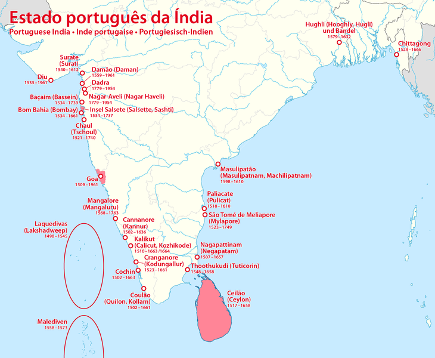

Emergence of European Powers
The Portuguese

- Vasco Da Gama aided by Guajrati navigator Ibn Masid landed in Calicut on 21st May 1498
- Calicut was then ruled by Zamorin
- They brought to India the cultivation of tobacco
- First printing press was set up at Goa by the Portuguese in 1556
- In 1661 King of Portugal gave Bombay as dowry to Charles II when he married Catherine Benganza
- Vasco Da Gama visited India three times and is buried at Fort Kochi
Francisco-de-Almedia
- Portuguese governor from 1505-1509
- Combined Muslim fleet won a naval battle in Chaul over the Portuguese fleet under Almedia's son in 1508
- Almedia defeated the Muslim fleet in a naval battle fought at Diu in 1509
Alfonso-de-Albuquerque
- Portuguese governor from 1509-1515
- Captured Goa from Adil Shah of Bijapur in 1510
- Goa recaptured by Adil Shah, so he had to undertake 2nd expedition
- He recaptured and fortified Goa againt surprise attack
- Portuguese naval supremacy was established along the south-west coast
Nino-de-Cunha
- Portuguese governor from 1529-1538
- Established settlements in San Thome, Madras and Hughli in Bengal
- In 1534 the Portuguese got the permission to build factories at Satgaon and Chittagong
- He shifted the Portuguese capital from Cochin to Goa
- In 1534 got possession of Diu and Bassein
- Only Goa, Diu and Daman remained with them till 1961
The Dutch
The Malabar
- Only port the held on the Malabar coast was Vengurla
- Defeated by the british in 1759 at the Battle of Bedara
The Coromondal
- Admiral Van Den Haghen set up permanent factory in Masulipatnam in 1605
- Another factory was founded in Devanapatnam or Fort St David in 1610
- Another factory at Pulicat named Fort Geldria
Bengal
- First established a factory in Pipli
- Firm footing in Chinsurah in 1653
The Danes
- Arrived in India in 1616
- Established settlements in Tranquebar (Tharangambadi) and Serampore
- Forced to sell their settlements to the British in 1854
The French
- The French Indian Settlements (or French India) included Pondicherry (now Puducherry), Karikal and Yanaon on the Coromandel Coast, Mahe on the Malabar Coast and Chandernagore in West Bengal
- First expedition under Francois Caron in 1667
- First French factory in Surat
- In 1699 second factory in Masulipatnam by securing patent from Sultan of Golconda
- In 1672 under De La Haye French occupied San Thome near Madras
- In 1673 Francois Martin director of the factory at Masulipatnam obtained a site for a factory at Valikondapuram which later came to be known as Pondicherry
- Foudation stone for the famous Frech settlement of Chandannagore was set at 1690
- Arrival of Dupleix as French Governor in 1724 saw the begining of the Carnatic Wars
- Their final defeat was at the hands of the British in Battle of Wandiwash in 1760
The English
Initial Stages
- John Mildenhall an English merchant came to India in 1599
- East India Company was formed though a charter granted by Queen Elizabeth I on 31st December 1600
- First two expedition (1601-1606) of the EIC was not to India but to Java, Sumatra and the Malaccas
- Third voyage in 1608 under William Hawkings initiated the process of engaging in trade with India
Western Coast
- William Hawkings appeared in Jahangir's court in 1609, but failed to get permission to erect a factory in Surat
- Permission was granted after they defeated the Portuguese fleet in 1612
- Sir Thomas Roe got farmans from Jahangir and prince Khurram to erect factories at differnt parts of the empire
- From Surat they extended their inland trading to Amedabad, Broach, Baroda and Agra by 1616
- Bombay was declared the headquarter of the company on 1687
- Gerald Aungier was the first governor of Bombay
Eastern Coast
Bengal